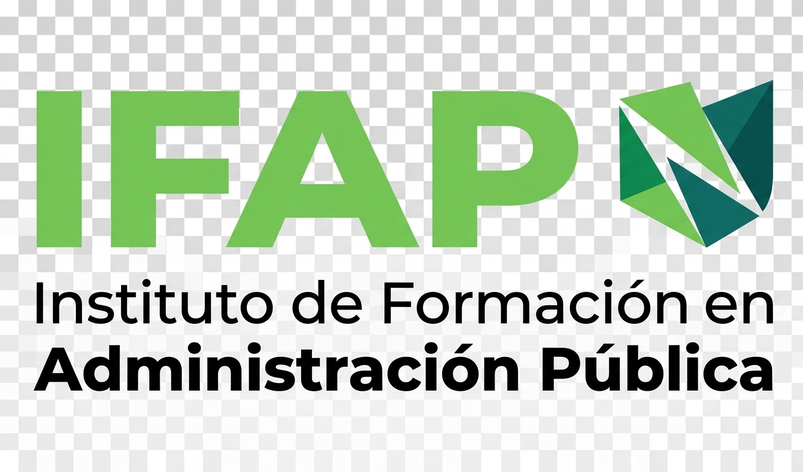

Durante la Tecnicatura Superior en Desarrollo de Software Full Stack se estudian diferentes materias relacionadas con la programación, las bases de datos, el desarrollo web y la infraestructura informática.
En esta materia aprendemos los conceptos básicos de programación, algoritmos, variables, estructuras de control, funciones y arreglos.
Se estudia cómo organizar, almacenar y consultar información mediante bases de datos y diferentes herramientas.
Aprendemos sobre los componentes de una computadora, su funcionamiento y la relación entre hardware y software.
Desarrollamos la capacidad de resolver problemas utilizando algoritmos y diferentes lenguajes de programación.
Aprendemos a crear páginas y aplicaciones web utilizando HTML, CSS, JavaScript y otras tecnologías.
Todas estas materias permiten adquirir conocimientos necesarios para comprender las diferentes etapas del desarrollo de software y continuar avanzando en la carrera.